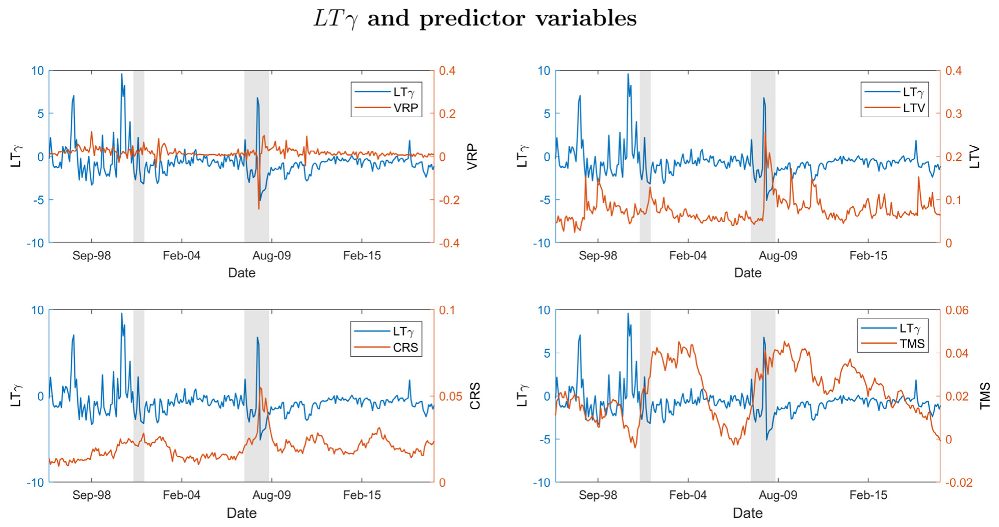
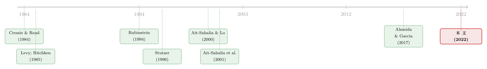

每一张期权背后，站着一个怎样的投资者？
本文读的是 Almeida & Freire (2022, Journal of Financial Economics)：在不完全市场里，作者把「最小离差 (minimum dispersion)」的风险中性测度族整理成一条由单一参数 \(\gamma\) 标定的曲线，从而像隐含波动率那样、却以「物理分布」为锚，反推出给每一张 S&P 500 指数期权定价的边际投资者是谁。结果是：期权价格绝大多数（看涨 98.02%、看跌 96.72%）都落在用底层收益率算出的价格上下界之内，市场看似被一群对尾部风险看法各异的异质投资者所「分割」；而其中只有 OTM put 上那些厌恶下行风险的投资者偏好，能显著预测未来 2–6 个月的市场收益。
1 一个老掉牙的悖论
先从一个让无数人头疼的老问题说起。
期权的价格里，藏着市场对未来的「概率」——这就是所谓的风险中性分布 (risk-neutral distribution)，或者叫状态价格密度 (state-price density, SPD)。另一边，底层资产（比如 S&P 500 指数）过去几十年的收益率，也给了我们一个「真实世界」的分布——物理分布 (physical distribution)。一个自然到不能再自然的问题是：这两者对得上吗？ 期权市场对未来的判断，和底层收益率告诉我们的，是不是同一回事？
回答这个问题的经典做法，是假设市场是完全 (complete) 的。在完全市场里，无套利意味着只存在唯一一个严格为正的随机折现因子 (stochastic discount factor, SDF)，于是你可以从期权价格里抽出 SPD，再除以物理分布，得到那把唯一的「定价核 (pricing kernel)」。Ait-Sahalia and Lo (2000)、Jackwerth (2000)、Rosenberg and Engle (2002) 一路做下来，结果却很尴尬：算出来的定价核不是单调递减的——在某些区间里，财富越多、边际效用反而越高。这违背了几乎所有经济学模型对一个风险厌恶代表性投资者的要求。这就是著名的「定价核之谜 (pricing kernel puzzle)」。Ait-Sahalia et al. (2001) 更进一步，直接拒绝了「期权隐含 SPD 与底层收益隐含 SPD 相同」这个原假设。
于是结论似乎是：期权市场不理性，或者投资者不会理性地预测未来。
但真的是这样吗？这正是本文要掀翻的桌子。
2 把「唯一」松开：不完全市场这条岔路
作者的出发点很朴素：也许问题不在投资者，而在「完全市场」这个假设本身。
期权市场的成交量大得惊人，这本身就说明期权相对底层资产并非冗余 (redundant)——如果它们只是底层的线性组合，谁还费劲去交易？一旦承认市场是不完全 (incomplete) 的，无套利就不再钉死唯一的 SDF，而是允许无穷多个严格为正、都能正确给底层资产定价、却可能给期权开出不同价码的 SDF（等价地，无穷多个风险中性测度）。
完全市场里，无套利 ⟹ 唯一 SDF；不完全市场里，无套利 ⟹ 无穷多个 SDF。多出来的这份「自由度」，恰恰是用来容纳期权这种非冗余资产的。
可问题立刻来了：既然有无穷多个测度，你该挑哪一个？
早期文献的回答是「划界」。Levy (1985)、Ritchken (1985) 推导出与单调递减定价核相容的期权价格上下界；Cochrane and Saa-Requejo (2000) 用「方差有限的 SDF」、Bernardo and Ledoit (2000) 用「增益-损失比 (gain-loss ratio) 有限」各自构造出价格区间。这些界很有用——它能告诉你某个期权价格「越没越界」。但它们止步于此：界只会说「在不在范围内」，却讲不清一张期权到底是被怎样的投资者、用怎样的偏好给定出来的。
这就是本文要补上的那一步。
3 「最近」的那一族测度：最小离差
接着，一个自然的问题是：在那无穷多个测度里，凭什么挑？
作者的前提同样朴素到优雅：一个风险中性测度，除了「必须正确给底层资产定价」之外，没有任何先验理由去偏离物理分布。换句话说，我们应该找那些「离物理分布最近」的测度——用一个凸的损失函数 \(\phi(\cdot)\) 来度量 \(Q\) 与 \(P\) 之间的差异，然后最小化它。
但「最近」本身是模糊的：用方差度量、用熵度量、用别的什么度量，挑出来的测度并不一样，给期权的定价也就不一样。Stutzer (1996) 选了 Kullback-Leibler 信息准则 (KLIC)，别人选方差……每个人都在赌一个特定的损失函数。真正关键的一步在于：作者不去赌任何单一损失函数，而是把整个 Cressie-Read (1984) 散度族一网打尽——这一族由单一参数 \(\gamma \in \mathbb{R}\) 索引：
$$ \phi_\gamma\!\left(\frac{dQ}{dP}\right) = \frac{\left(\frac{dQ}{dP}\right)^{\gamma+1} - 1}{\gamma(\gamma+1)}. $$
不同的 \(\gamma\) 对应不同的「最近」标准：\(\gamma \to -1\) 是经验似然 (empirical likelihood)，\(\gamma = -1/2\) 是 Hellinger 散度，\(\gamma = -2\) 是 Pearson 卡方，\(\gamma \to 0\) 退化为 KLIC（即 Stutzer 的那个特例）。换言之，整条文献此前各自押注的那些测度，不过是这一族里的几个孤立的点。
于是最小离差问题写成：在所有满足定价约束的测度里，找那个散度最小的——
这里 \(R^e \equiv R - R_f\) 是超额收益向量。约束 \(E_Q[R^e]=0_K\) 来自 Euler 方程 \(E(mR^e)=\int mR^e\,dP=0_K\) 经由换测度 \(dQ = \frac{m}{E(m)}dP\) 得到——非负 SDF 与风险中性测度之间是一一对应的。
但这个问题是无穷维的，直接求解很难。作者沿用 Almeida and Garcia (2017) 的办法，把它转成一个低维的对偶问题来解。这是全文方法论的技术心脏，值得一步步看清楚。
4 模型推导：从无穷维原问题到一维对偶
第一步：把物理分布换成经验分布。 只用底层收益率做估计时，样本空间是离散有限的，有 \(n\) 个状态 \(k=\{1,\dots,n\}\)，\(n>K\)。观测到的总收益 \(\{R_k\}_{k=1}^n\) 独立同分布于 \(P\)。我们用经验测度 \(P_n\) 替换未知的 \(P\)，给每个状态赋权 \(\pi_k = 1/n\)。
第二步：写出离散版的原问题。 待求的是每个状态下的风险中性概率 \(\pi_k^Q\)。由 Corollary 1，原问题是：
$$ \min_{\{\pi_1^Q,\dots,\pi_n^Q\}}\; \sum_{k=1}^{n}\pi_k\,\frac{\left(\pi_k^Q/\pi_k\right)^{\gamma+1}-1}{\gamma(\gamma+1)} $$
约束为
$$ \sum_{k=1}^{n}\pi_k^Q\left(R_k - R_f\right)=0,\qquad \sum_{k=1}^{n}\pi_k^Q = 1,\qquad \pi_k^Q \ge 0\;\;\forall k. $$
三个约束分别是：鞅性质（超额收益期望为零）、概率归一、非负。这仍然是个 \(n\) 维的约束优化，\(n\) 动辄成千上万。
第三步：换到对偶。 这是真正巧妙的地方。在样本中无套利的前提下，原问题的值与下面这个只含一个标量 \(\lambda\) 的对偶问题相等（且对偶可达）。当 \(\gamma>0\) 时：
$$ \lambda^*_\gamma = \arg\max_{\lambda\in\mathbb{R}}\; -\frac{1}{\gamma+1}\sum_{k=1}^{n}\pi_k\left(1+\gamma\lambda\left(R_k-R_f\right)\right)^{\frac{\gamma+1}{\gamma}}. $$
一个无穷维（或高维）的、关于整条概率向量的搜索，被压缩成了一维的、关于单个 \(\lambda\) 的凹优化。直觉上，\(\lambda\) 是鞅约束的拉格朗日乘子；它一旦定了，每个状态的风险中性概率 \(\pi_k^Q\) 就由一阶条件唯一确定。无套利之所以是「基本条件」，正是因为它保证了原问题与对偶问题的值重合——一旦样本里出现套利机会，这座桥就塌了。
为什么说这套测度「有经济含义」？因为最小化 Cressie-Read 散度的对偶问题，恰好等价于一个最大化 HARA（双曲绝对风险厌恶, hyperbolic absolute risk aversion）效用的投资者的组合选择问题。参数 \(\gamma\) 正好索引每一个 HARA 投资者及其风险偏好。HARA 这一族囊括了二次、指数、对数、幂效用与 CRRA 等几乎所有常用效用形式——所以「落在界内」就等于「能被某个行为良好的偏好解释」。
5 implied \(\gamma\)：像隐含波动率，却以物理分布为锚
到这里，反转出现了。
作者证明了一个漂亮的单调性：任何欧式期权的隐含价格，关于 \(\gamma\) 单调递减。 这意味着，只要让 \(\gamma\) 在一个区间里扫一遍，两端的极限测度就给出了期权价格的上界与下界——这正是「最小离差价格界」。更重要的是，对于落在界内的那些真实期权价格，你可以反推出唯一的那个 \(\gamma\)，它标定了「正确给这张期权定价」的那个边际测度、那个边际投资者。
这就是全文的核心一招：implied \(\gamma\)。
把它和隐含波动率 (implied volatility) 摆在一起看，差别才显出来。隐含波动率的「微笑 (smile)」衡量的是真实 SPD 偏离 Black-Scholes 对数正态分布的程度——它的参照系是一个模型。而 implied \(\gamma\) 的「微笑」衡量的是真实 SPD 偏离那个离物理分布最近的测度的程度——它的参照系是数据本身。前者说的是「Black-Scholes 被设定错了」，后者说的是「市场里存在一群对风险态度各异的异质边际投资者」。两件完全不同的事。
而打通这层解释的钥匙，是绝对审慎 (absolute prudence, Kimball 1990)——它与对下行风险的厌恶 (aversion to downside risk, Menezes et al. 1980) 相连。implied \(\gamma\) 的微笑，本质上是在度量不同行权价上的边际投资者，对下行风险的审慎程度有多不一样。
（关于「从期权价格里读出对未来的概率判断」这条更一般的线索，可参见《把未来的概率从期权价格里「读」出来：一个被忽略的无套利约束》；而关于「股与债期权是否其实彼此一致、只是被不完全市场误判」，可参见《股与债，真的「各说各话」吗？》。）
6 数据与实证：期权其实「对得上」
作者用这套方法，对 S&P 500 指数期权做了一次大规模检验。
- 数据：1986 年 1 月 2 日至 2019 年 6 月 28 日，共
1,998,832张期权。 - 物理分布：每天用底层收益率非参数地估计一个条件物理分布（而且逐日调整波动率——这一点与 Constantinides et al. (2009) 把波动率在长达三年内视作常数形成对照）。
- 价格界：对每张期权算出最小离差上下界；对落在界内的，反推 implied \(\gamma\)。
结果干净利落：绝大多数期权价格都落在界内——看涨 98.02%、看跌 96.72%。 尤其值得一提的是，短期 OTM put 里有 97.53% 被界包住——这直接顶撞了「风险中性分布的左尾最难与底层收益对上」的流行说法。换句话说，一旦允许市场不完全，期权价格与底层收益率基本是一致的、是被理性地定出来的。 定价核之谜，很大程度上是「完全市场」这个假设强加出来的幻觉。
平均而言，期权被一条 implied 的「冷笑 (smirk)」所调和：OTM put（以及 ITM call）相对 ITM put（OTM call）更贵。OTM put 由厌恶下行风险的审慎 (prudent) 投资者定价，与把它当崩盘保险来买（Rubinstein 1994 的「crashophobia」）相一致；而 OTM call 的边际投资者审慎为负，活像一个借杠杆下注的投机者。
7 1987 与「crashophobia」：一段被重新讲述的历史
implied \(\gamma\) 最有戏剧性的地方，在它如何重述了 1987 年 10 月全球股灾前后的那段历史。
崩盘之前，隐含波动率曲线是平的——人们在用 Black-Scholes 公式给期权定价。但 implied \(\gamma\) 却呈现一个反向的冷笑 (reverse smirk)：OTM put 在相对意义上反而比 ATM/ITM put 更便宜。这说明什么？如果物理分布真是对数正态的，implied \(\gamma\) 曲线本该也是平的；可真实的底层收益率显示出相当高的崩盘概率，而期权市场当时根本没把它定进去。投资者在用一个与物理分布不符的模型定价。
崩盘之后，结构翻转成我们熟悉的那条冷笑：OTM put（ITM call）变贵。这印证了 crashophobia——但程度比隐含波动率冷笑所暗示的要轻，因为在不少时期，低行权价与 ATM 期权的 implied \(\gamma\) 其实彼此接近。更微妙的是，每逢金融危机前后，implied \(\gamma\) 反而变得近乎扁平（哪怕隐含波动率仍然冷笑）——在这些时点，横截面上所有边际投资者都是审慎的。异质性，恰恰在危机中收窄了。
8 尾部偏好，能预测市场吗？
最后一步，作者把 implied \(\gamma\) 当作投资者「时变的风险态度」的代理变量，问它能不能预测未来的超额市场收益。
答案是有选择性的：只有与「对下行风险的补偿」相关的偏好——也就是 OTM put 上那些审慎投资者的 \(\gamma\)——能够显著预测未来市场收益，在 2 到 6 个月的区间上尤其强，且对文献里的传统预测变量稳健。作为对照，用隐含波动率做同样的练习，找不到显著的预测力。这从另一个角度证明：implied \(\gamma\) 与隐含波动率捕捉到的偏度模式，是两件相当不同的东西。
下图把这条线索画了出来：它对照了「左尾补偿」与「右尾补偿」各自的月度时间序列，以及它们与利差升降的关系——只有左尾那条，才与未来收益的预测信号系统性地相连。

Figure 13: compares the monthly time series of LT with spread increases (decreases), RT decreases (increases)
这一发现，为近年把时变灾难风险 (time-varying disaster risk) 写进资产定价的模型（如 Gabaix 2012）提供了实证支持。
（关于「期权信息能给收益率定个下界、并据此预测」的相邻思路，可参见《期权价格能给收益率定个「地板价」吗》。）
9 文献脉络
把这条线索捋一捋，本文站的位置就清楚了。
源头是统计学：Cressie and Read (1984) 提出了那一族由 \(\gamma\) 索引的拟合优度散度——多年后，它成了金融里整套「最小离差测度」的母体。第一支流是不完全市场下的期权价格界：Levy (1985)、Ritchken (1985) 从单调定价核出发，Cochrane and Saa-Requejo (2000)、Bernardo and Ledoit (2000) 从有限方差/增益-损失比出发，给出区间——但都只「划界」，不「解释」。第二支流是用最小离差 SDF 给资产定价：Stutzer (1996) 用 KLIC（Cressie-Read 的 \(\gamma\to 0\) 特例）给期权定价，Almeida and Garcia (2017) 把对偶方法系统化——但文献多半只盯着方差或熵这一两个点。第三支流是完全市场下「期权 vs 底层」的对账：Ait-Sahalia and Lo (2000)、Jackwerth (2000)、Rosenberg and Engle (2002)、Ait-Sahalia et al. (2001) 一路撞出了定价核之谜。第四支流是用稀有事件补偿解释股权溢价与可预测性：Gabaix (2012) 是其中代表。
本文的位置，是把上述四支拧成一股：它第一个把整条 Cressie-Read 测度族（而非某个点）用于期权定价，用 implied \(\gamma\) 既给出最宽的价格界、又能用单一参数反推边际投资者，从而把「定价核之谜」重述为不完全市场中异质投资者的尾部风险分歧，并让这种分歧去预测市场。

10 评论与延伸（Q&A + 研究方向）
(a) 几个可能的疑问
Q：implied \(\gamma\) 和隐含波动率，到底差在哪？说「以物理分布为锚」是不是文字游戏？
不是。隐含波动率的参照系是 Black-Scholes 对数正态分布——一个模型；它的微笑度量「模型设定错了多少」。implied \(\gamma\) 的参照系是「离真实物理分布最近的那个测度」——数据；它的微笑度量「真实 SPD 偏离物理分布多少」。最直接的证据是 1987 年前：隐含波动率平、implied \(\gamma\) 却反向冷笑，因为物理分布当时已显示高崩盘概率。两者在同一段历史上给出相反的读数，足见不是同一回事。
Q：把「无穷多个测度」缩成「Cressie-Read 一族」，会不会本身就是一种武断的赌注？
会有这个担心，但这恰是作者的辩护点：他们不押单一损失函数，而是把整族都纳入，再以价格界（而非点估计）的形式给出结论。而且这一族有经济内核——每个 \(\gamma\) 对应一个 HARA 投资者。代价是：HARA 之外的偏好被排除在外，越界并不必然等于「非理性」，只能说「不能被行为良好的 HARA 偏好解释」。
Q：98% 的期权落在界内，会不会只是因为界画得太宽，几乎什么都装得下？
作者对此有正面回应：他们证明所提的界是「能用单一参数反推边际投资者」的最宽的界。更关键的是，界内并非一团模糊——每个价格都对应一个唯一可识别的 \(\gamma\)，而正是这些 \(\gamma\) 的横截面结构（冷笑、危机中变平）和时序结构（预测收益）携带了可证伪的信息。如果界宽到无意义，这些规律不该如此系统。
Q：用历史收益率非参数地估物理分布，估计误差会不会污染整套 implied \(\gamma\)？
这是最实在的识别担忧。物理分布是逐日非参数估计的，尾部（恰恰是 OTM put 最吃重的地方）天然样本稀疏、估计噪声大。作者用逐日调整波动率来缓解（对比 Constantinides et al. 2009 的常波动率假设是个进步），但左尾概率的估计精度仍是这套方法的命门——崩盘前那段「物理分布显示高崩盘概率」的论断，对尾部估计尤其敏感。
Q：为什么只有 OTM put 的 \(\gamma\) 能预测收益，OTM call 不行？
因为两者背后的边际投资者性质相反。OTM put 由审慎、厌恶下行风险的投资者定价，他们的偏好直接关乎对灾难的补偿，与未来风险溢价同源；OTM call 的边际投资者审慎为负、更像投机者，其需求与风险补偿关系弱。这与「时变灾难风险」类模型的预测一致：能定价未来收益的是对下行风险的厌恶。
Q：这和「定价核之谜」是什么关系——谜被解决了，还是被绕开了？
更准确地说是被重新框定了。谜之所以成谜，是「完全市场 + 代表性投资者」框架强行要求一条单调定价核。作者表明：一旦承认市场不完全、承认横截面上存在偏好各异的异质边际投资者，期权价格与底层收益其实大体一致——非单调的「定价核」不过是把多个投资者强行平均成一个的产物。
(b) 几个可能的研究问题与提案
1. 把 implied \(\gamma\) 搬到公司债与信用衍生品上。 【经济故事】信用市场同样不完全、同样由对尾部（违约、衰退）看法各异的投资者分割。能否用 CDX/单名 CDS 期权的横截面，反推「给信用尾部定价的边际投资者」是谁，并检验其 \(\gamma\) 是否预测未来信用利差？这会把本文从股指尾部推广到信用尾部。 【可行性】中。需要 CDS/CDX 期权数据（Markit、OptionMetrics 之外的专门数据源），且信用底层的「物理分布」更难非参数估计（违约是稀有事件）。识别上可借鉴本文的对偶框架，但样本稀疏是真实障碍。
2. 外资持有人是否就是那群「右尾边际投资者」？ 【经济故事】本文识别出 OTM call 由审慎为负的投机者定价、OTM put 由审慎投资者定价，但对「这些边际投资者是谁」保持中立（正如 Gârleanu et al. 2009 对终端用户保持中立）。一个自然猜想：不同投资者群体（外资、对冲基金、做市商）在尾部期权上的持仓，能否与 implied \(\gamma\) 的横截面对上号？ 【可行性】中偏低。需要把期权持仓按投资者类型拆分的数据（如 CFTC 持仓、13F 难覆盖期权），与 implied \(\gamma\) 在时序上匹配。数据可得性是主要瓶颈，但只要能拿到分类持仓，识别策略相对直接。
3. implied \(\gamma\) 的「危机变平」能否做成系统性风险的前瞻指标？ 【经济故事】本文发现危机前后横截面 \(\gamma\) 趋于扁平（所有边际投资者都变审慎）。这种「偏好同质化」本身，是否先于系统性事件出现，可作为尾部风险累积的早期信号？ 【可行性】高。所需数据（S&P 500 期权 + 底层收益）本文已全部用到，方法现成。把 \(\gamma\) 横截面离散度做成月度指标，再与已知危机时点、VIX、尾部风险测度做事件研究即可，doable。
4. 流动性冲击如何扭曲 implied \(\gamma\)？ 【经济故事】OTM put 既是崩盘保险、也是流动性最差的合约。implied \(\gamma\) 里有多少是「偏好」、多少其实是「流动性溢价」？把做市商风险承受能力（库存、资本约束）作为外生冲击，看 \(\gamma\) 如何反应，能把偏好与流动性两条解释分开。 【可行性】中。可借助券商宕机、做市商资本事件等准自然实验（参见《当波动率曲面被「散户」推歪》的思路），识别上有抓手，但要干净地把流动性从偏好里剥出来并不容易。
11 我的判断
贡献。 这篇论文最漂亮的地方，是把一个看似纯技术的工具（Cressie-Read 测度族 + 对偶解法）变成了一把有经济解释力的尺子。implied \(\gamma\) 之于隐含波动率，正如「以物理分布为锚」之于「以 Black-Scholes 为锚」——它让「期权贵不贵」这个老问题，第一次有了一个同时尊重底层收益信息的相对价值标尺，并顺手把定价核之谜重述为异质投资者的尾部分歧。把整族测度（而非某个特例）拿来定价、并证明所提界是「可反推单一边际投资者」的最宽界，是扎实的方法论增量。
对识别的担忧。 我最不放心的是物理分布的尾部估计。整套结论里最反直觉、也最重要的几条——崩盘前 OTM put「被低估」、危机中 \(\gamma\) 变平、OTM put 的 \(\gamma\) 预测收益——全都压在左尾概率的非参数估计上，而左尾恰恰是数据最稀、噪声最大的地方。逐日调波动率是进步，但崩盘概率的点估计能有多稳，文章给我的安心程度有限。其次，HARA 之外的偏好被先验排除，「越界 = 不可被良好偏好解释」与「越界 = 非理性」之间的距离，值得更谨慎地措辞。
后续想看什么。 三件事：一是把 implied \(\gamma\) 的预测力做成可交易策略，扣掉真实的期权交易成本后还剩多少 alpha；二是把「边际投资者是谁」从匿名推进到具名——用分类持仓数据给 \(\gamma\) 贴上投资者标签；三是把这套框架移植到信用与外汇尾部，看「以物理分布为锚」这把尺子，在另外两个同样不完全、同样被尾部分歧主导的市场里，是否同样照得出隐藏的边际投资者。
参考文献
- Ait-Sahalia, Y., Lo, A. W. (2000). Nonparametric risk management and implied risk aversion. Journal of Econometrics 94, 9–51.
- Ait-Sahalia, Y., Wang, Y., Yared, F. (2001). Do option markets correctly price the probabilities of movement of the underlying asset? Journal of Econometrics 102, 67–110.
- Almeida, C., Garcia, R. (2017). Economic implications of nonlinear pricing kernels. Management Science 63(10), 3361–3380.
- Almeida, C., Freire, G. (2022). Pricing of index options in incomplete markets. Journal of Financial Economics 144(1), 174–205.
- Bernardo, A. E., Ledoit, O. (2000). Gain, loss, and asset pricing. Journal of Political Economy 108(1), 144–172.
- Cochrane, J. H., Saa-Requejo, J. (2000). Beyond arbitrage: Good-deal asset price bounds in incomplete markets. Journal of Political Economy 108(1), 79–119.
- Constantinides, G. M., Jackwerth, J. C., Perrakis, S. (2009). Mispricing of S&P 500 index options. Review of Financial Studies 22(3), 1247–1277.
- Cressie, N., Read, T. R. C. (1984). Multinomial goodness-of-fit tests. Journal of the Royal Statistical Society Series B 46(3), 440–464.
- Gabaix, X. (2012). Variable rare disasters: An exactly solved framework for ten puzzles in macro-finance. Quarterly Journal of Economics 127(2), 645–700.
- Gârleanu, N., Pedersen, L. H., Poteshman, A. M. (2009). Demand-based option pricing. Review of Financial Studies 22(10), 4259–4299.
- Jackwerth, J. C. (2000). Recovering risk aversion from option prices and realized returns. Review of Financial Studies 13(2), 433–451.
- Kimball, M. S. (1990). Precautionary saving in the small and in the large. Econometrica 58(1), 53–73.
- Levy, H. (1985). Upper and lower bounds of put and call option value: Stochastic dominance approach. Journal of Finance 40(4), 1197–1217.
- Menezes, C., Geiss, C., Tressler, J. (1980). Increasing downside risk. American Economic Review 70(5), 921–932.
- Ritchken, P. H. (1985). On option pricing bounds. Journal of Finance 40(4), 1219–1233.
- Rosenberg, J. V., Engle, R. F. (2002). Empirical pricing kernels. Journal of Financial Economics 64(3), 341–372.
- Rubinstein, M. (1976). The valuation of uncertain income streams and the pricing of options. Bell Journal of Economics 7(2), 407–425.
- Rubinstein, M. (1994). Implied binomial trees. Journal of Finance 49(3), 771–818.
- Stutzer, M. (1996). A simple nonparametric approach to derivative security valuation. Journal of Finance 51(5), 1633–1652.